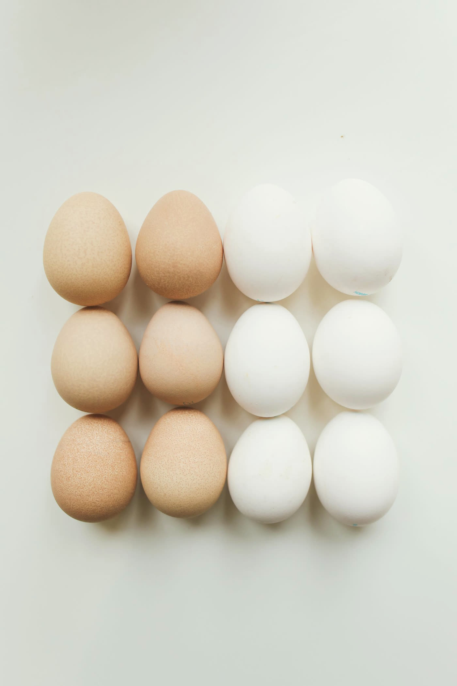

Gratis testBekijk plan
Gratis testBekijk plan
Keto
Mijn Keto Menu
€ 1,80 per week
Voor wie: Je wilt een kant-en-klaar keto-weekmenu in een app
Doe de gratis keto-test ↗ Wat je krijgt en waar je op letBij keto eet je heel weinig koolhydraten. Je eet vooral groente, vis, vlees, ei, kaas en noten. Je lichaam gaat daardoor meer vet verbranden.
Probeer gratis ↓
Het Voedingscentrum raadt aan om een koolhydraatarm dieet samen met een diëtist te doen.

Deze plannen beginnen met een gratis test of quiz. Je ziet eerst wat je krijgt en beslist daarna pas.
Je kiest bij de aanbieder. Via onze links krijgen wij een kleine vergoeding (#ad), jij betaalt niets extra.
Gratis testBekijk plan
Voor wie: Je wilt een kant-en-klaar keto-weekmenu in een app
Doe de gratis keto-test ↗ Wat je krijgt en waar je op let Gratis testBekijk plan
Gratis testBekijk plan
Voor wie: Je wilt keto proberen met een coach erbij
Doe de keto-quiz ↗ Wat je krijgt en waar je op let
Een plan voor 7 dagen, een boodschappenlijst om af te vinken en 3 makkelijke recepten.
Open de startgids → Gewoon afvallen
Gewoon afvallen  Bewegen
Bewegen